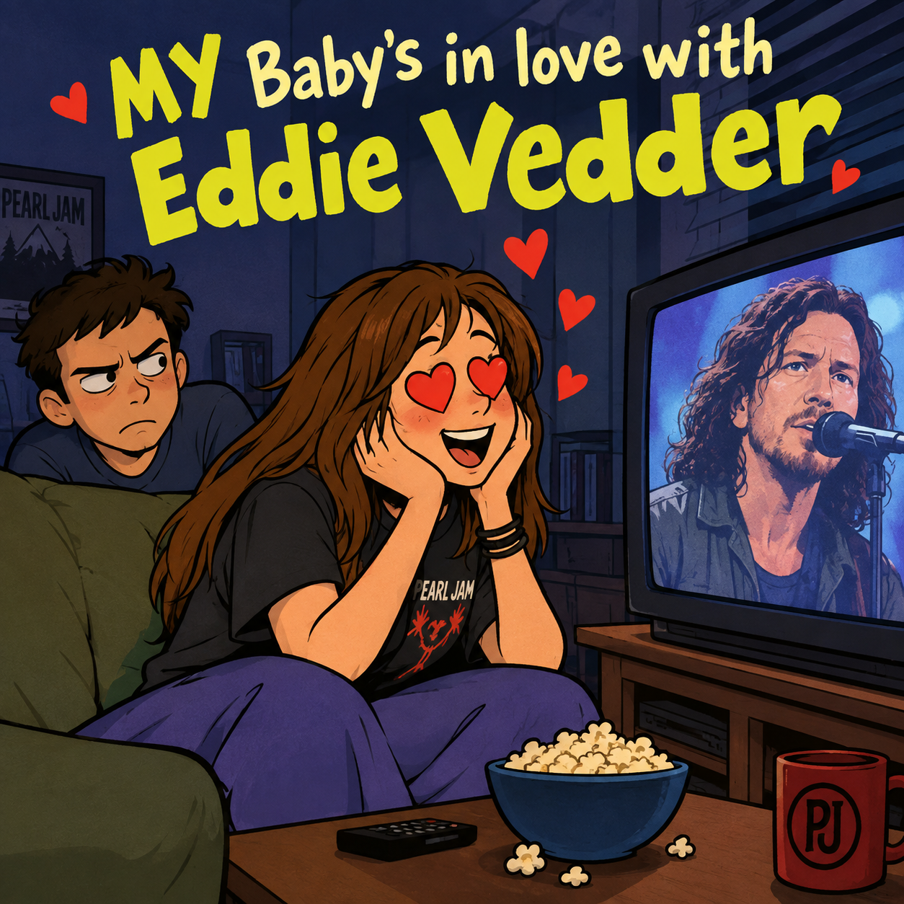

Imagem gerada por inteligência artificial
"My Baby's in Love with Eddie Vedder" é uma canção de "Weird Al" Yankovic lançada em 1999 no álbum Running with Scissors. A música apresenta uma situação humorística em que o narrador reclama que sua namorada está completamente apaixonada por Eddie Vedder, vocalista e guitarrista da banda americana Pearl Jam. A letra exagera essa paixão por uma celebridade, mostrando o ciúme e a frustração do namorado diante da obsessão dela pelo músico.
Musicalmente, a canção se destaca por ser apresentada no estilo zydeco, um gênero originário da cultura franco-crioula da Louisiana, conhecido pelo uso marcante do acordeão e por seus ritmos rápidos e dançantes.
A escolha desse estilo cria um contraste divertido com o tema da música e com a imagem de Eddie Vedder, associado principalmente ao rock alternativo e ao grunge dos anos 1990.
A letra também menciona Alanis Morissette, cantora canadense de rock alternativo que poderia ser considerada uma espécie de contraparte feminina de Vedder dentro da música, embora a referência também possa ter sido escolhida simplesmente por causa da rima.
Como uma brincadeira adicional, nos agradecimentos especiais do encarte de Running with Scissors, Al escreveu "...and apologies to Eddie Vedder, who is actually a pretty cool guy.", reconhecendo de forma bem-humorada que a música era apenas uma brincadeira e que ele tinha uma boa opinião sobre Vedder.
Com duração de 3 minutos e 25 segundos, "My Baby's in Love with Eddie Vedder" combina uma história absurda, referências à cultura pop e uma sonoridade incomum para criar uma das faixas mais divertidas e características de Running with Scissors.
Oh, my baby, my baby she don't want me no more
Ever since she saw his poster in that record store
She says the way he grinds his molars is really sexy
She thinks he's so darn dysfunctional and "Generation X"y
She likes his brooding angst and his wild-eyed stare
Yeah, he's her very favorite slacker multi-millionaire
Well, my baby's in love with Eddie Vedder
She's all crazy 'bout that Eddie Vedder
Once she was mine, but now I better just forget her
'Cause my baby's in love with Eddie Vedder
Now, every time I see him, well, he looks so grim
I guess it really must suck to be a rock star like him
What a pain in the butt to have so much success
Spending all his time moping and avoiding the press
But my girl can't get enough of his sullen demeanor
Like he's some big tortured genius and I'm some kinda wiener
Well, my baby's in love with Eddie Vedder
She's got a thing for that Eddie Vedder
Tell me, what can he do that I can't do better
Now my baby's in love with
I said I said I said my baby's in love with Eddie Vedder
Head over heels for that Eddie Vedder
I cant believe it, now she's knitting him a sweater
'Cause my baby's in love with Eddie Vedder
I knew we were headin' for disaster
When she caught me hangin' out at the Ticketmaster
Now she's got an unrequited adoration
For the frustrated, agitated, designated alienated
Spokesman for the disaffected grunge generation
Well, I don't wear Doc Martens and I don't wear flannel
And I don't boycott the music video channel
And I just can't compete with all that money and fame
But I know two can play at this game
Yeah, well, let's just see how jealous she'll get
When I start stalking Alanis Morissette
Well, my baby's in love with Eddie Vedder
She's all crazy 'bout that Eddie Vedder
Once she was mine but now I better just forget her
'Cause my baby's in love with
I said I said I said my baby's in love with Eddie Vedder
Why'd she have to fall for that Eddie Vedder
If she wants to leave me, I guess I better let her
'Cause my baby's in love with Eddie Vedder